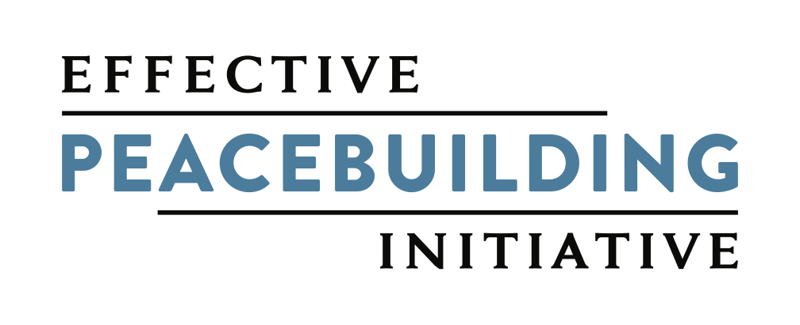

The Effective Peacebuilding Initiative (EPI) is an independent nonprofit organization working to improve how the world understands and practices peacebuilding. The Almanac is its annual record: fifteen pieces, printed once, released here one entry per month.
- Entries
- 15
- Open
- 03
- Sealed
- 12
- Next release
- Aug 1
Part I The State of Peacebuilding


04

The Peacebuilding Field Is Experiencing an Identity Crisis — But That’s How We Grow
Opens next
08.26
Part II What Works — and How Do We Know?
05

On Evidence, Experimentation and Risk
Sealed
09.26
06

Is There Proof That Conflict Prevention Really Works?
Sealed
10.26
07
Measuring What Gets Missed: ACLED’s Peace Agreement and Ceasefire Tracker
Sealed
11.26
08
Why Peacebuilding Is Falling Short — and Four Practices to Maximize Investments
Sealed
12.26
Part III Peace in Practice
09

What Local Ownership Requires of Non-Locals
Sealed
01.27
10
At Peace with AI?: What Still Needs Interrogating
Sealed
02.27
11
A Model for Digital Peacebuilding: Bridging Divides in Ethiopia
Sealed
03.27
12
Reclaiming Narrative Power in a Militarized World
Sealed
04.27
Part IV The Future of Peacebuilding
13

In the Age of AI: Why Data Autonomy and Cooperative Sense-Making Are Peacebuilding Imperatives
Sealed
05.27
14
Revitalizing the Peace Ecosystem: A New Strategy for Peace Philanthropy
Sealed
06.27
15
Reimagining Security from the Ground Up
Sealed
07.27
Release of records
The complete Vol. I file opens when Vol. II publishes.
All 250 printed copies are accounted for. Waitlist members receive the complete Volume I PDF, every entry and endnote, on the day Volume II enters the record.